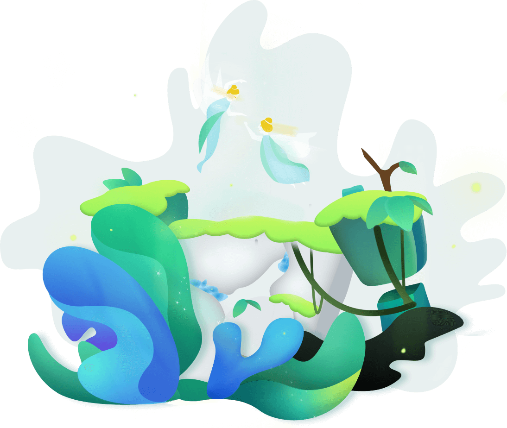

NFT collections
A collection groups related NFTs under a shared name and symbol. Collection information describes the group; each item has its own identity.
Forest
Forest is an NFT ecosystem project on aelf, centred on digital items and the collections that bring them together. Explore NFT concepts, the role of SEEDs, and the project’s open-source resources.

A collection groups related NFTs under a shared name and symbol. Collection information describes the group; each item has its own identity.
An NFT item is identified by its symbol within a collection. Metadata can describe its name, artwork, and other attributes; the chain identifies its records.
SEEDs are NFTs associated with names for tokens or NFT collections on aelf. Symbol Market explains this relationship between a SEED and its associated symbol.
Learn how SEEDs relate to token names, and how fungible tokens differ from NFT collections and items.
Understand inscription ticks, total supply, limits per mint, and the terminology used in inscription records.
A chain, a symbol, and a transaction ID help identify a record. AElfScan provides an explorer for public blockchain data.
The eforest-finance organization brings together source repositories for the Forest project.
The Forest contract repository contains source code for understanding the project’s contract design.
Use the chain and identifiers from a record when reading transactions, token information, and addresses in the explorer.